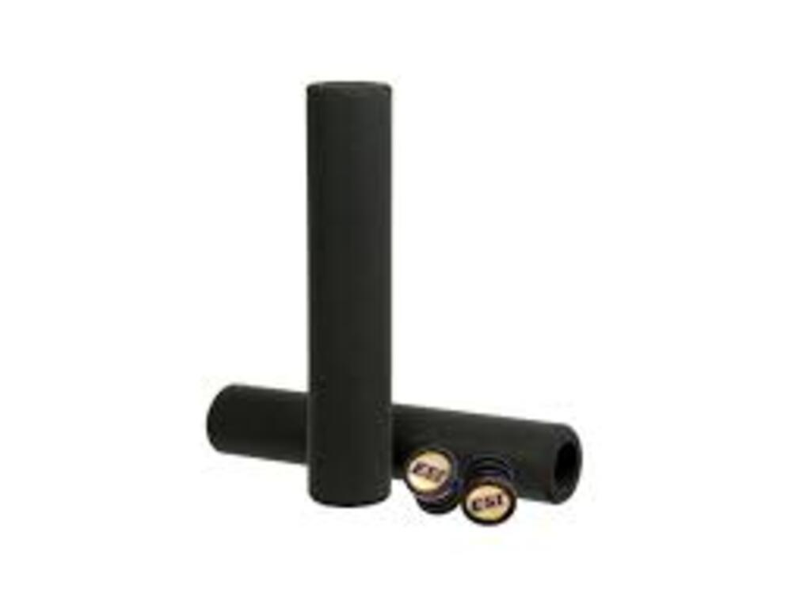

Puños de silicona ESI Racer's Edge
$37.999
COMPRAR
Descripción del Producto
Los ESI Grips son puños de espuma de silicona usados por la mayoría de los profesionales de la Copa del Mundo por su extraordinario agarre, su sorprendente absorción de las vibraciones, su firme fijación al manubrio y su resistencia a las inclemencias del tiempo y los rayos UV. No son perfectamente cilíndricos: hay una parte más gruesa para aportar un extra de confort a la palma de la mano.